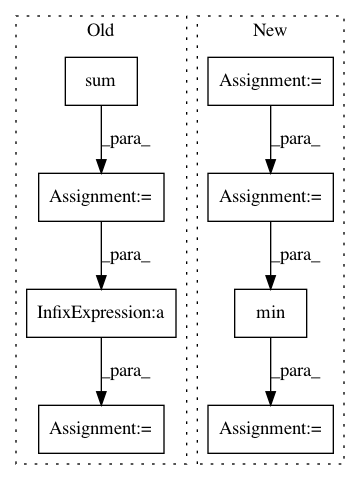

626173412d4281b693244e0705a787c4e7c08031,nilmtk/metrics.py,,fraction_energy_assigned_correctly,#,69
Before Change
for appliance in predicted_power:
appliance_energy_predicted = np.sum(predicted_power[appliance].values)
appliance_energy_ground_truth = np.sum(
df_appliances_ground_truth[appliance].values)
total_energy_ground_truth = np.sum(df_appliances_ground_truth.values)
fraction = np.append(
fraction, np.min(
[appliance_energy_predicted / total_energy_predicted,
appliance_energy_ground_truth /
total_energy_ground_truth
]))
return np.sum(fraction)
After Change
"""
predictions_submeters = MeterGroup(meters=predictions.submeters())
ground_truth_submeters = MeterGroup(meters=ground_truth.submeters())
fraction_per_meter_predictions = predictions_submeters.fraction_per_meter()
fraction_per_meter_ground_truth = ground_truth_submeters.fraction_per_meter()
fractions = []
for meter_instance in predictions_submeters.instance():
fraction = min(fraction_per_meter_predictions[meter_instance],
fraction_per_meter_ground_truth[meter_instance])
fractions.append(fraction)
return sum(fractions)
In pattern: SUPERPATTERN
Frequency: 3
Non-data size: 8
Instances
Project Name: nilmtk/nilmtk
Commit Name: 626173412d4281b693244e0705a787c4e7c08031
Time: 2014-07-09
Author: jack-list@xlk.org.uk
File Name: nilmtk/metrics.py
Class Name:
Method Name: fraction_energy_assigned_correctly
Project Name: LCAV/pyroomacoustics
Commit Name: 7a77233231c67038271c9945760b7a1d711b242d
Time: 2017-04-04
Author: fakufaku@gmail.com
File Name: pyroomacoustics/beamforming.py
Class Name: Beamformer
Method Name: steering_vector_2D_from_point
Project Name: LCAV/pyroomacoustics
Commit Name: 5214393bb75498ded8fc140914edd79c1799af05
Time: 2017-04-04
Author: fakufaku@gmail.com
File Name: pyroomacoustics/beamforming.py
Class Name: Beamformer
Method Name: steering_vector_2D_from_point